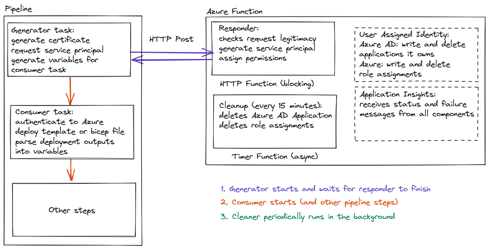

# JiT service principals ## for ci\cd pipelines ----- ### Current situation - ~100 service principals currently in use <!-- .element: class="fragment" --> - accounts can not be linked to owners <!-- .element: class="fragment" --> - account names are not following the same naming scheme <!-- .element: class="fragment" --> - service principal names are meaningless guids <!-- .element: class="fragment" --> - service principals cant easily be linked to service connections <!-- .element: class="fragment" --> - not following "least security principle" <!-- .element: class="fragment" --> - no review process (hard to implement one) <!-- .element: class="fragment" --> ----- ### Risks with maintaining existing solution --- #### Scaling issues it will get progressively harder to maintain existing solution with growth as the process is 100% manual --- #### Miss usage and permission sprawl right now there 12 different service connections role assignments one of the production subscriptions (an example) --- #### Extensive attack surface each service principal carries a risk of being compromised dev ones might have access to production subscriptions ----- ### Proposed solution Just-in-Time service principals generated during the build and destroyed after the build finishes ----- ### Benefits of JiT approach - fully automated approach that can scale almost indefinitely <!-- .element: class="fragment" --> - short-lived service principals with certificate authentication that expire automatically <!-- .element: class="fragment" --> - follows "least security principle" <!-- .element: class="fragment" --> - pipeline permissions are easily auditable <!-- .element: class="fragment" --> - virtually no attack surface and no permission sprawl <!-- .element: class="fragment" --> - merge multiple common tasks into one (arm, bicep, export variables, etc) <!-- .element: class="fragment" --> - relatively easy migration path <!-- .element: class="fragment" --> ----- ### Architecture  ----- ### Migration example Generator task (insert before consumer): ```yaml variables: - group: secops # provided for everyone to use ... - task: m-kopa.azure-jit-access-generator.azure-jit-access.azure-jit-access-generator@1 inputs: instrumentationKey: $(instrumentationKey) # from variable group above AzureFunctionName: $(functionName) # from variable group above AzureFunctionCode: $(functionCode) # from variable group above AzureScopes: | /subscriptions/xxx/resourceGroups/%rg% /subscriptions/yyy /subscriptions/zzz/resourceGroups/%rg%/providers/Microsoft.KeyVault/vaults/%kv% ``` for most use cases `AzureScopes` would simply be a reference to the resource group of deployment (not so many cross subscription deployments) --- modify the arm template deployment step(s): ```yaml [1-2|9] task: AzureResourceGroupDeployment@2 task: m-kopa.azure-jit-access-consumer.azure-jit-access.azure-jit-access-consumer@1 inputs: azureSubscription: xxx resourceGroupName: yyy location: region csmFile: '../azuredeploy.json' csmParametersFile: '../azuredeploy.parameters.json' deploymentOutputs: deployment_output ``` --- Remove `deploymentOutputs` steps Remove bicep transpile steps (optionally) Convert bicep script steps into jit consumer task ```yaml [1,4-8] task: AzureCLI@2 inputs: azureSubscription: xxx scriptType: bash scriptLocation: inlineScript inlineScript: | az deployment group create -g yyy --template-file azuredeploy.bicep --parameters keyVaultName=%param1% ``` ```yaml [1,5-7] task: m-kopa.azure-jit-access-consumer.azure-jit-access.azure-jit-access-consumer@1 inputs: # service connection name might be different from subscription name azureSubscription: xxx resourceGroupName: yyy location: region csmFile: azuredeploy.bicep overrideParameters: '-keyVaultName %param1%' ``` ----- ### Custom az cli and powershell tasks Powershell: ```powershell $cert = ( Get-ChildItem Cert:\CurrentUser\My ).Where{ $PSItem.Subject -match $env:RUN_ID } Install-Module Az.Resources -Force Connect-AzAccount -ServicePrincipal ` -CertificateThumbprint $cert.Thumbprint ` -ApplicationId $env:APPLICATION_ID ` -TenantId $env:TENANT_ID ``` --- Az cli: ```powershell Get-ChildItem "Cert:\CurrentUser\My" | Where-Object { $PSItem.Subject -match $env:RUN_ID } | Export-PfxCertificate -FilePath auth.pfx -Password ( ConvertTo-SecureString $env:RUN_ID -Force -AsPlainText ) openssl pkcs12 -in auth.pfx -out auth.pem ` -nodes -passin pass:$env:RUN_ID az login --service-principal ` --tenant $env:TENANT_ID ` --username $env:APPLICATION_ID ` --password auth.pem ``` --- or the token: ```powershell Install-Module Az.Resources -Force Connect-AzAccount ` -AccessToken $env:ACCESS_TOKEN ` -AccountId $env:APPLICATION_ID ``` - only available after consumer step - az cli can't use token directly ----- ### Downsides - needs migration (effort from developers and infrastructure team) <!-- .element: class="fragment" --> - needs development time from infrastructure team <!-- .element: class="fragment" --> - introduces external dependencies to pipelines <!-- .element: class="fragment" --> - still possible to use maliciously (can somewhat be mitigated in code) <!-- .element: class="fragment" --> - not possible to use convenience built-in tasks that rely on service connections <!-- .element: class="fragment" -->